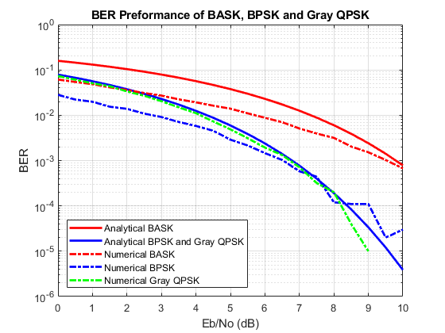

Contents
clear; close all; clc;
EE558 MATLAB Project Andrew Jefferson 825333113
Problem 1
xdB = 0:0.5:10;
x = 10.^(xdB/10);
x1 = sqrt(x);
x2 = sqrt(x*2);
Problem 2
L = 100000;
n = 10;
Eb = 1;
No = (10.^(xdB/10)).^-1;
Fc = 1000;
Tc = 1/Fc;
Fs = 10000;
Ts = 1/Fs;
t1 = Ts:Ts:Ts*n*L;
t1 = t1.';
for w = 1:length(No)
BPSK = randi([0, 1], L, 1);
BASK = randi([0, 1], L, 1);
noise = randn([L*n 1]);
for i = 1:L
switch(BPSK(i))
case 0
BPSK(i) = -1;
case 1
end
end
BPSKuS = zeros([L*n, 1]);
for i = 1:L
switch(BPSK(i))
case -1
for j = 1:n
BPSKuS(j + (i-1)*n) = -1;
end
case 1
for j = 1:n
BPSKuS(j + (i-1)*n) = 1;
end
end
end
BASKuS = zeros([L*n, 1]);
for i = 1:L
if(BASK(i) == 0)
for j = 1:n
BASKuS(j + (i-1)*n) = 0;
end
end
if(BASK(i) > 0)
for j = 1:n
BASKuS(j + (i-1)*n) = sqrt(2);
end
end
end
sig1 = BPSKuS .* cos(2*pi*Fc*t1);
tsig1 = sig1 + sqrt(No(w)/2) * noise;
rsig1 = tsig1 .* cos(2*pi*Fc*t1);
rsig1 = lowpass(rsig1, (n/(Fs/2)));
rsig1 = rsig1(n/2:n:L*n-n/2);
for i = 1:L
if(rsig1(i) <= 0)
rsig1(i) = -1;
end
if(rsig1(i) > 0)
rsig1(i) = 1;
end
end
errorCount1 = 0;
for i = 1:L
if(BPSK(i) ~= rsig1(i))
errorCount1 = errorCount1 + 1;
end
end
BPSKerror(w, 1) = errorCount1/L;
sig2 = BASKuS .* cos(2*pi*Fc*t1);
tsig2 = sig2 + sqrt(No(w)/2) * noise;
rsig2 = tsig2 .* cos(2*pi*Fc*t1);
rsig2 = lowpass(rsig2, (n/(Fs/2)));
rsig2 = rsig2(n/2:n:L*n-n/2);
for i = 1:L
if(rsig2(i) <= sqrt(2)/4)
rsig2(i) = 0;
end
if(rsig2(i) > sqrt(2)/4)
rsig2(i) = 1;
end
end
errorCount2 = 0;
for k = 1:L
if(BASK(k) ~= rsig2(k))
errorCount2 = errorCount2 + 1;
end
end
BASKerror(w, 1) = errorCount2/L;
Gray QPSK
Es = sqrt(2)/4;
inphase = zeros([L/2 1]);
quatrature = zeros([L/2 1]);
grayQPSK = randi([0,1], L, 1);
noise = randn([L*n 1]);
t2 = Ts:Ts:Ts*0.5*L*n;
t2 = t2.';
for i = 1:L/2
switch (grayQPSK(2*i - 1))
case 0
switch(grayQPSK(2*i))
case 0
inphase(i, 1) = Es;
quatrature(i, 1) = Es;
case 1
inphase(i, 1) = -Es;
quatrature(i, 1) = Es;
end
case 1
switch(grayQPSK(2*i))
case 1
inphase(i, 1) = -Es;
quatrature(i, 1) = -Es;
case 0
inphase(i, 1) = Es;
quatrature(i, 1) = -Es;
end
end
end
inphaseUS = repelem(inphase, n*2);
quatratureUS = repelem(quatrature, n*2);
sigI = inphaseUS .* cos(2*pi*Fc*t1);
sigQ = quatratureUS .* sin(2*pi*Fc*t1);
QPSKsig = sigI + sigQ;
tQPSKsig = QPSKsig + sqrt(No(w)/2) * noise;
rQPSKsigI = tQPSKsig .* cos(2*pi*Fc*t1);
rQPSKsigI = lowpass(rQPSKsigI, (n/(Fs/2)));
rinphase = rQPSKsigI(n:2*n:L*n-n);
rQPSKsigQ = tQPSKsig .* sin(2*pi*Fc*t1);
rQPSKsigQ = lowpass(rQPSKsigQ, (n/(Fs/2)));
rquatrature = rQPSKsigQ(n:2*n:L*n-n);
for i = 1:L/2
if(rinphase(i) > 0)
if(rquatrature(i) > 0)
rgrayQPSK(2*i-1) = 0;
rgrayQPSK(2*i) = 0;
else(rquatrature(i) <= 0);
rgrayQPSK(2*i-1) = 1;
rgrayQPSK(2*i) = 0;
end
else(rinphase(i) <= 0);
if(rquatrature(i) > 0)
rgrayQPSK(2*i-1) = 0;
rgrayQPSK(2*i) = 1;
else(rquatrature(i) <= 0);
rgrayQPSK(2*i-1) = 1;
rgrayQPSK(2*i) = 1;
end
end
end
errorCount3 = 0;
for i = 1:L
if(grayQPSK(i) ~= rgrayQPSK(i))
errorCount3 = errorCount3 + 1;
end
end
QPSKerror(w, 1) = errorCount3/L;
end
BER Plot
BER = semilogy(xdB, qfunc(x1), xdB, qfunc(x2), ...
xdB, BASKerror, xdB, BPSKerror, ...
xdB, QPSKerror);
for i =1:5
BER(i).LineWidth = 2;
end
BER(1).Color = 'red';
BER(2).Color = 'blue';
BER(3).Color = 'red';
BER(4).Color = 'blue';
BER(5).Color = 'green';
BER(3).LineStyle = '-.';
BER(4).LineStyle = '-.';
BER(5).LineStyle = '-.';
grid on;
legend('Analytical BASK','Analytical BPSK and Gray QPSK', ...
'Numerical BASK', 'Numerical BPSK', ...
'Numerical Gray QPSK', 'Location','southwest');
title("BER Preformance of BASK, BPSK and Gray QPSK");
ylabel("BER");
xlabel("Eb/No (dB)");
